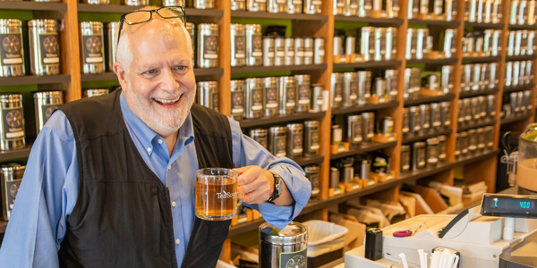

Our mission at TeaShop is simple: offer the best value on the finest teas and tisanes from around the world.
We strive for the highest quality in all we do—from the experience you have in your cup to the experience you have in our stores and online.
TeaShop is the Twin Cities’ foremost tea importer, wholesaler, retailer, and tea destination.
Founded in 1997 in a spare bedroom and a little room for packing, we now have more than 12,000 square feet devoted to importing, blending, warehousing and selling tea.
In 2019, we were honored to receive the Best Specialty Tea Brand award at the World Tea Expo, and owner Bill Waddington was voted Best Tea Educator by tea industry peers and professionals.
With our extensive knowledge and more than 200 teas sourced from around the world, we help our customers learn to enjoy and appreciate tea more.
From everyday favorites to award-winning classics, we strive to have unmatched quality, uniqueness and exclusivity in our teas.
We are passionate about tea and tea is all we do. With literally thousands of different teas available (all of them from the Camellia sinensis plant) and new teas being made all the time, the world of tea becomes a limitless exploration of new sensory and aesthetic experience.
There are very few things in life that can be enjoyed as widely and with so much variety as tea.
Along the way, many wise and experienced tea experts shared their knowledge with us, so we try to take that same approach with others.
We are huge believers in tea education and outreach.
We have conducted hundreds of tea tastings and workshops for our customers, and we have given talks and speeches about tea everywhere, from Las Vegas to Hamburg to Beijing.
We love answering tea questions and helping people learn about tea, so thanks for your interest! Let us know what we can do to help you learn about and enjoy tea.